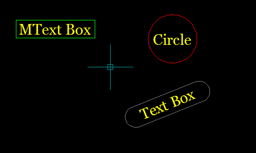

Associative Textbox
This page is delivered for consistency purposes only, as part of the LeeMac sample module of DynALisp, which shows how DynALisp turns existing AutoLISP programs into a module. The program and its description are the work of Lee Mac, who keeps all the credit for them. The original page, with the latest version, is on Lee Mac's website: https://lee-mac.com/assoctextbox.html
| Function Syntax | LM-AssociativeTextbox – original syntax: tbox / rtbox (see aliases) |
| Current Version | 1.3 |
| Compatible with AutoCAD for Mac? | No |
| Compatible with AutoCAD LT? | Yes |
| This program is also available at the Autodesk Exchange App Store | |
| Original Page | lee-mac.com/assoctextbox.html |
Program Description
This program enables the user to create an associative textbox surrounding a Text or MText object in the drawing. The size, position, orientation & rotation of the resulting textbox is automatically updated following modification to the associated Text or MText object.
The user may create an associative textbox by issuing the tbox command at the AutoCAD command-line. Upon calling the program, the user is prompted to specify an Offset Factor for the textbox, and indicate the shape of the textbox to be created.
The Offset Factor controls the dimensions of the textbox relative to the size of the associated annotation object and is a function of the text height. To provide an example, specifying an Offset Factor of 0.35 will result in a textbox which is offset from the text object by 0.35 multiplied by the text height of the object.
Upon entering a valid Offset Factor, the user may choose from four types of textbox: Circle, Rectangle, Slot, or Filleted Rectangle. The circular textbox will have diameter equal to the length of the diagonal of the rectangular textbox. The Slot textbox will have dimensions equal to the rectangular textbox, however, the vertical edges (relative to the text object) will be semi-circular. The Filleted Rectangle textbox will also have dimensions equal to the rectangular textbox, but all four corners will be filleted to a radius equal to the offset factor multiplied by the text height of the associated text object.
The program will remember the previously used settings for both the offset factor & textbox type, and these settings will be available as default options at both prompts throughout the active drawing session.
The user will then be prompted to select either a Text or MText object to enclose with the textbox. At this prompt the user will be notified if the selected Text or MText object already possesses an associative textbox.
Textbox associativity may be removed at any time by issuing the rtbox (Remove Textbox) command at the AutoCAD command-line. When called, the user is prompted to select either a text or textbox object to remove the associativity between the pair. At this prompt the user also has the option to remove associativity from all textboxes in the drawing.
Note that this program will only remove the associative nature of the textbox - the user may subsequently delete the text or textbox object if required.
Associative Behaviour
The program utilises a combination of Object Reactors & Command Reactors to monitor modification events to either the annotation object or surrounding textbox and will update either object accordingly.
If the annotation object (Text or MText) is modified, the surrounding textbox will be automatically updated to reflect the modifications.
If the textbox is modified, the program will automatically revert all modifications applied to the textbox so as to retain the correct size & position relative to the associated annotation object.
If the annotation object is copied, the associative textbox will also be copied and will form a new pair of associative text & textbox objects.
If either annotation object or textbox are erased during the drawing session, the textbox associativity will not be lost until the drawing is closed. This enables the user to retain textbox associativity following an undo of the erase operation.
All associative data is stored within the Extended Entity Data (xData) of both the annotation object and associated textbox object. This xData is removed upon using the rtbox command on a text & textbox pair.
The use of xData enables the retention of textbox associativity between drawing sessions by rebuilding the required reactors based on the available xData when the program is loaded.
Please note that this program will need to be loaded to enable associative behaviour for existing textbox objects in a drawing.
Demonstration

Bundled program notes
;;----------------------=={ Associative Textbox }==---------------------;;
;; ;;
;; ---------------------------------- ;;
;; Program Overview ;;
;; ---------------------------------- ;;
;; ;;
;; This program enables the user to create an associative textbox ;;
;; surrounding a Text or MText object in the drawing. The size, ;;
;; position, orientation & rotation of the resulting textbox will ;;
;; be automatically updated following modification to the associated ;;
;; Text or MText object. ;;
;; ;;
;; The user may create an associative textbox by issuing the 'tbox' ;;
;; command at the AutoCAD command-line. Upon calling the program, the ;;
;; user is prompted to specify an Offset Factor for the textbox, and ;;
;; the shape of the textbox to be created. ;;
;; ;;
;; The Offset Factor controls the dimensions of the textbox relative ;;
;; to the size of the associated annotation object and is a function ;;
;; of the text height. To provide an example, specifying an Offset ;;
;; Factor of 0.35 will result in a textbox which is offset from the ;;
;; text object by 0.35 multiplied by the text height of the object. ;;
;; ;;
;; Upon entering a valid Offset Factor, the user may choose from ;;
;; three types of textbox: Circle, Rectangle or Slot. The circular ;;
;; textbox will have diameter equal to the length of the diagonal of ;;
;; the rectangular textbox. The Slot textbox will have dimensions ;;
;; equal to the rectangular textbox, however, the vertical edges ;;
;; (relative to the text object) will be semi-circular. ;;
;; ;;
;; The program will remember the previously used settings for both ;;
;; the offset factor & textbox type, and these settings will be ;;
;; available as default options at both prompts throughout the active ;;
;; drawing session. ;;
;; ;;
;; The user will then be prompted to select either a Text or MText ;;
;; object to enclose with the textbox. At this prompt the user will ;;
;; be notified if the selected Text or MText object already possesses ;;
;; an associative textbox. ;;
;; ;;
;; Textbox associativity may be removed at any time using by issuing ;;
;; the 'rtbox' (Remove Textbox) command at the AutoCAD command-line. ;;
;; When called, the user is prompted to select either a text or ;;
;; textbox object to remove the associativity between the pair. At ;;
;; this prompt the user also has the option to remove associativity ;;
;; from all textboxes in the drawing. ;;
;; ;;
;; Note that this program will only remove the associative nature of ;;
;; the textbox - the user may subsequently delete the text or textbox ;;
;; object if required. ;;
;; ;;
;; ---------------------------------- ;;
;; Associative Behaviour ;;
;; ---------------------------------- ;;
;; ;;
;; The program utilises a combination of Object Reactors & Command ;;
;; Reactors to monitor modification events to either the annotation ;;
;; object or surrounding textbox and will update either object ;;
;; accordingly. ;;
;; ;;
;; If the annotation object (Text or MText) is modified, the ;;
;; surrounding textbox will be automatically updated to reflect the ;;
;; modifications. ;;
;; ;;
;; If the textbox is modified the program will automatically revert ;;
;; all modifications applied to the textbox so as to retain the ;;
;; correct size & position relative to the associated annotation ;;
;; object. ;;
;; ;;
;; If the annotation object is copied, the associative textbox will ;;
;; also be copied and will form a new pair of associative text & ;;
;; textbox objects. ;;
;; ;;
;; If either annotation object or textbox are erased during the ;;
;; drawing session, the textbox associativity will not be lost until ;;
;; the drawing is closed. This enables the user to retain textbox ;;
;; associativity following an undo of the erase operation. ;;
;; ;;
;; All associative data is stored within the Extended Entity Data ;;
;; (xData) of both the annotation object and associated textbox ;;
;; object. This xData is removed upon using the 'rtbox' command on a ;;
;; text & textbox pair. ;;
;; ;;
;; The use of xData enables the retention of textbox associativity ;;
;; between drawing sessions by rebuilding the required reactors ;;
;; based on the available xData when the program is loaded. ;;
;; ;;
;; Please note that this program will need to be loaded to enable ;;
;; associative behaviour for existing textbox objects in a drawing. ;;
;; ;;
;;----------------------------------------------------------------------;;
;; Author: Lee Mac, Copyright © 2013 - www.lee-mac.com ;;
;;----------------------------------------------------------------------;;
;; Version 1.0 - 30-04-2013 ;;
;; ;;
;; First release. ;;
;;----------------------------------------------------------------------;;
;; Version 1.1 - 30-04-2013 ;;
;; ;;
;; Fixed bug causing the program to crash during loading if reactors ;;
;; whose reactor data is of a data type other than string are already ;;
;; running in the active drawing session. ;;
;;----------------------------------------------------------------------;;
;; Version 1.2 - 01-05-2013 ;;
;; ;;
;; Fixed bug causing MText & LWPolyline objects residing in Paperspace ;;
;; layouts to be transferred to Modelspace. ;;
;;----------------------------------------------------------------------;;
Command Names And Aliases
As in every DynALisp module, each program of this sample module has one main command, named LM-*, and the original command names of Lee Mac's page are kept as its aliases: they run the same command, and can be added, renamed or removed in Dyl-Suite (saved in Resources\Aliases.csv). The rows marked ↳ are child commands of LM-AssociativeTextbox: they are run by their alias, or picked from LM-AssociativeTextbox when it lists them (their command is named Pst-*).
| Command | Aliases | Name |
|---|---|---|
| LM-AssociativeTextbox | TBOX | Associative Textbox |
| ↳ RTBOX | – | Remove Associative Textbox |